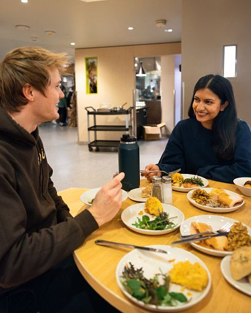

This guide is set up to help you be successul inside and outside of the classroom and we have included the following resources throughout our site:
Academic Resources
Basic Needs Help
Mental Health
Explore Our Resources
Academic Support:
If you are struggling in your SI/SI-related class, need to understand the material deeper, or are shy about getting help from your teachers, use the UMSI Tutoring Services. Get the help you need with our services which are available to all!
UMSI Tutors helping students.
Basic Needs Support:
It is hard to be successful in school if you don't have proper nutrition, housing, or other essential things. Don't be shy and access this resource whenever you want to.

Counseling and Psychological Services (CAPS):
Discover the University of Michigan Counseling and Psychological Services (CAPS) program to support your mental health. There are lots of different ways to talk to someone when you want help!
Try out Individual Peer Counseling to have a place to vent.